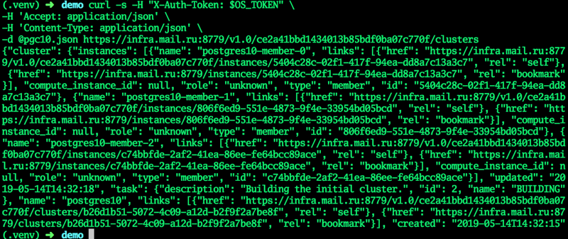
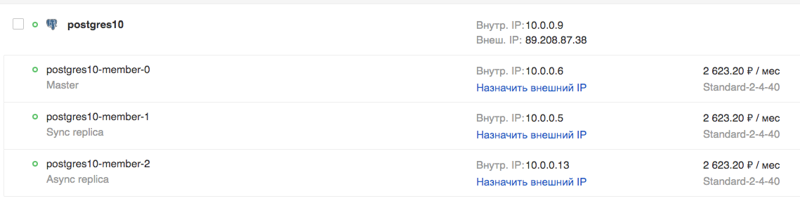
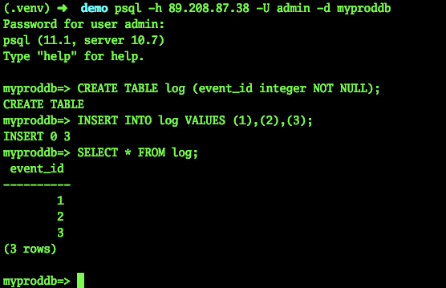
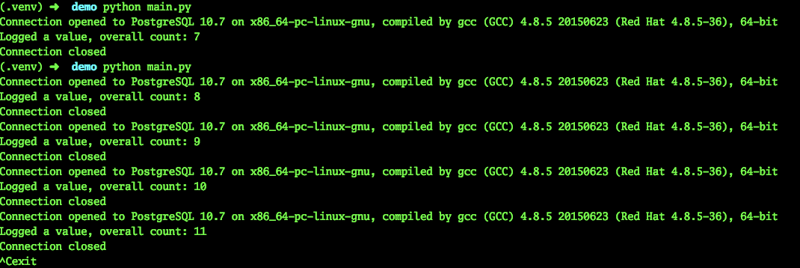
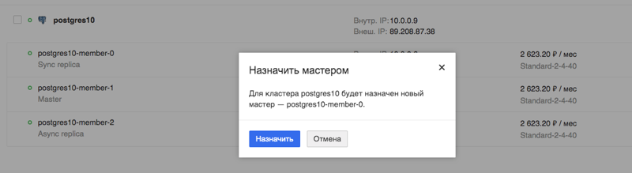

На сегодняшний день высокая доступность сервисов требуется всегда и везде, не только в крупных дорогих проектах. Временно недоступные сайты с сообщением «Извините, проводится техническое обслуживание» ещё встречаются, но обычно вызывают снисходительную улыбку. Прибавим к этому жизнь в облаках, когда для запуска дополнительного сервера нужен лишь один вызов к API, причем думать о «железной» эксплуатации не надо. И уже не остается оправданий, почему критичная система не была сделана надежно с использованием кластерных технологий и резервирования.
Мы расскажем, какие решения мы рассматривали для обеспечения надёжности баз данных в своих сервисах и к чему пришли. Плюс демо с далеко идущими выводами.
Еще лучше это видно в разрезе развития различных opensource-систем. Старые решения вынуждены были добавлять технологии высокой доступности по мере повышения спроса. И качество их было разным. Решения нового поколения ставят высокую доступность в основу своей архитектуры. Например, MongoDB позиционирует кластер как основной вариант использования. Кластер масштабируется горизонтально, что является сильным конкурентным преимуществом этой СУБД.
Вернёмся к PostgreSQL. Это один из старейших популярных opensource-проектов, первый релиз которого состоялся в 95-м году прошлого века. Команда проекта долгое время не считала высокую доступность задачей, которую нужно решать со стороны системы. Поэтому технология репликации для создания копий данных стала встроенной только в версии 8.2 в 2006-м, но она была файловой (log shipping). В 2010 в версии 9.0 появилась потоковая репликация, и она является основой для создания самых разных кластеров. Это, собственно, очень удивляет людей, которые знакомятся с PostgreSQL после Enterprise SQL или современных NoSQL — стандартным решением от сообщества является просто пара master-replica с синхронной или асинхронной репликацией. При этом в стоке переключение мастера производится вручную, и вопрос переключения клиентов также предлагается решать самостоятельно.
Тем не менее, PostgreSQL не стал бы таким популярным, если бы не было огромного количества проектов и инструментов, которые помогают построить отказоустойчивое решение, не требующее постоянного внимания. В облаке Mail.ru Cloud Solutions (MCS) с самого запуска DBaaS были доступны одиночные серверы PostgreSQL и пары мастер-реплика с асинхронной репликацией.
Естественно, мы хотели упростить всем жизнь и сделать доступной такую инсталляцию PostgreSQL, которая могла служить основой для высокодоступных сервисов, за которой не нужно было бы постоянно следить и просыпаться ночью, чтобы сделать переключение. В этом сегменте есть и старые проверенные решения, и поколение новых утилит, использующих последние наработки.
Сегодня проблема высокой доступности упирается не в резервирование (это само собой), а в консенсус — алгоритм по выбору лидера (Leader election). Чаще всего крупные аварии происходят не из-за нехватки серверов, а из-за проблем с консенсусом: не выбрался новый лидер, появились два лидера в разных датацентрах и т.п. Пример — авария на MySQL-кластере Github — они написали подробный постмортем.
Математическая база в этом вопросе очень серьезная. С одной стороны, есть CAP теорема, которая накладывает теоретические ограничения на возможности построения HA-решений, с другой — математически доказанные алгоритмы определения консенсуса, такие как Paxos и Raft. На этой основе существуют довольно популярные DCS (системы децентрализованного консенсуса) — Zookeeper, etcd, Consul. Поэтому если система принятия решения работает на каком-то своем алгоритме, написанном самостоятельно, следует крайне осторожно к нему относиться. После анализа огромного количества систем мы остановились на Patroni — opensource-системе, в основном, разрабатываемой компанией Zalando.
В качестве лирического отступления скажу, что мы также рассматривали и multi-master решения, то есть кластеры, которые можно горизонтально масштабировать на запись. Однако по двум главным причинам решили не делать такой кластер. Во-первых, такие решения имеют высокую сложность и, соответственно, больше уязвимых мест. Будет тяжело сделать стабильное решение для всех случаев. Во-вторых, в таком случае PostgreSQL перестает быть чистым (native), некоторые функции будут недоступны, у некоторых приложений при работе могут возникнуть скрытые баги.
Итак, как работает Patroni? Разработчики не стали изобретать велосипед и предложили использовать в основе одно из проверенных DCS-решений. На откуп ему отдаются все вопросы с синхронизацией конфигураций, выбором лидера и кворумом. Мы выбрали для этого etcd.
Далее Patroni занимается правильным применением всех настроек на PostgreSQL и настройками репликации, а также исполнением команд на switchover и failover (то есть — штатного и нештатного переключения мастера). Конкретно в облаке MCS можно создать кластер из мастера, синхронной реплики и одной или нескольких асинхронных реплик. Присутствие синхронной реплики обеспечивает сохранность данных как минимум на 2 серверах, и именно эта реплика будет главным «кандидатом в мастера».
Так как etcd разворачивается на тех же серверах, рекомендуется количество серверов 3 или 5, для оптимального значения кворума. Такой кластер масштабируется горизонтально на чтение (о масштабировании на запись я писал выше). Тем не менее следует учитывать, что асинхронным репликам свойственно отставание, особенно при высоких нагрузках.
Использование таких реплик на чтение (hot standby) обоснованно для задач отчетности или аналитики и разгружает мастер-сервер.
Если вы захотите сделать такой кластер самостоятельно, то вам понадобится:
То есть в общей сложности нужно правильно составить десяток конфигурационных файлов и нигде не ошибиться. Для этого точно стоит использовать configuration management tool, такой как Ansible, например. При этом здесь все равно отсутствует высокодоступный TCP-балансировщик. Сделать его — отдельная работа.
Для тех, кому нужен готовый кластер, но не хочется во всём этом ковыряться, мы постарались упростить жизнь и сделали готовый кластер на Patroni у себя в облаке, его можно потестить бесплатно. Помимо самого кластера, мы сделали:
Их можно подключить и через API облака MCS, и веб-консоль.
Для тестирования возможностей PostgreSQL кластера в облаке MCS давайте посмотрим, как поведет себя живое приложение при проблемах с СУБД.
Далее представлен код приложения, которое будет логировать искусственные события и сообщать об этом на экран. В случае ошибок оно будет сообщать об этом и продолжать свою работу в цикле, пока мы его не остановим комбинацией Ctrl + C.
from __future__ import print_function
from datetime import datetime
from random import randint
from time import sleep
import psycopg2
def main():
try:
connection = psycopg2.connect(user = "admin",
password = "P@ssw0rd",
host = "89.208.87.38",
port = "5432",
database = "myproddb")
cursor = connection.cursor()
cursor.execute("SELECT version();")
record = cursor.fetchone()
print("Connection opened to", record[0])
cursor.execute(
"INSERT INTO log VALUES ({});".format(randint(1, 10000)))
connection.commit()
cursor.execute("SELECT COUNT(event_id) from log;")
record = cursor.fetchone()
print("Logged a value, overall count: {}".format(record[0]))
except Exception as error:
print ("Error while connecting to PostgreSQL", error)
finally:
if connection:
cursor.close()
connection.close()
print("Connection closed")
if __name__ == '__main__':
try:
while True:
try:
print(datetime.now())
main()
sleep(3)
except Exception as e:
print("Caught error:\n", e)
sleep(1)
except KeyboardInterrupt:
print("exit")
Приложению для работы необходим PostgreSQL. Создадим кластер в облаке MCS, используя API. В обычном терминале, где в переменной OS_TOKEN содержится токен для доступа к API (можно получить командой openstack token issue), наберем команды:
Создаем кластер:
cat <<EОF > pgc10.json
{"cluster":{"name":"postgres10","allow_remote_access":true,"datastore":{"type":"postgresql","version":"10"},"databases":[{"name":"myproddb"}],"users":[{"databases":[{"name":"myproddb"}],"name":"admin","password":"P@ssw0rd"}],"instances":[{"key_name":"shared","availability_zone":"DP1","flavorRef":"d659fa16-c7fb-42cf-8a5e-9bcbe80a7538","nics":[{"net-id":"b91eafed-12b1-4a46-b000-3984c7e01599"}],"volume":{"size":50,"type":"DP1"}},{"key_name":"shared","availability_zone":"DP1","flavorRef":"d659fa16-c7fb-42cf-8a5e-9bcbe80a7538","nics":[{"net-id":"b91eafed-12b1-4a46-b000-3984c7e01599"}],"volume":{"size":50,"type":"DP1"}},{"key_name":"shared","availability_zone":"DP1","flavorRef":"d659fa16-c7fb-42cf-8a5e-9bcbe80a7538","nics":[{"net-id":"b91eafed-12b1-4a46-b000-3984c7e01599"}],"volume":{"size":50,"type":"DP1"}}]}}
EOF
curl -s -H "X-Auth-Token: $OS_TOKEN" -H 'Accept: application/json' -H 'Content-Type: application/json' -d @pgc10.json https://infra.mail.ru:8779/v1.0/ce2a41bbd1434013b85bdf0ba07c770f/clusters

Когда кластер перейдет в статус ACTIVE, все поля получат актуальные значения — кластер готов.
В GUI:

Попробуем подключиться и создать таблицу:
psql -h 89.208.87.38 -U admin -d myproddb
Password for user admin:
psql (11.1, server 10.7)
Type "help" for help.
myproddb=> CREATE TABLE log (event_id integer NOT NULL);
CREATE TABLE
myproddb=> INSERT INTO log VALUES (1),(2),(3);
INSERT 0 3
myproddb=> SELECT * FROM log;
event_id
----------
1
2
3
(3 rows)
myproddb=>

В приложении укажем актуальные настройки для подключения к PostgreSQL. Мы укажем адрес TCP-балансировщика, тем самым отпадёт необходимость в ручном переключении на адрес мастера. Запустим его. Как видно, события успешно логируются в базу данных.

Теперь протестируем работу нашего приложения при плановом переключении мастера:

Наблюдаем за приложением. Видим, что работа приложения действительно прерывается, но занимает это всего несколько секунд, в этом конкретном случае, максимум 9.
Теперь попробуем сымитировать падение виртуальной машины, текущего мастера. Можно было бы просто выключить виртуальную машину через интерфейс Horizon, только это будет штатное выключение. Такое переключение будет обработано всеми службами, в том числе, Patroni.
Нам же нужно непредсказуемое выключение. Поэтому я попросил наших администраторов в тестовых целях выключить виртуальную машину — текущего мастера — нештатным способом.

В это же время продолжало работу наше приложение. Естественно, такое экстренное переключение мастера не может пройти незаметно.
2019-03-29 10:45:56.071234
Connection opened to PostgreSQL 10.7 on x86_64-pc-linux-gnu, compiled by gcc (GCC) 4.8.5 20150623 (Red Hat 4.8.5-36), 64-bit
Logged a value, overall count: 453
Connection closed
2019-03-29 10:45:59.205463
Connection opened to PostgreSQL 10.7 on x86_64-pc-linux-gnu, compiled by gcc (GCC) 4.8.5 20150623 (Red Hat 4.8.5-36), 64-bit
Logged a value, overall count: 454
Connection closed
2019-03-29 10:46:02.661440
Error while connecting to PostgreSQL server closed the connection unexpectedly
This probably means the server terminated abnormally
before or while processing the request.
Caught error:
local variable 'connection' referenced before assignment
……………………………………………………….. - здесь какое-то количество ошибок
2019-03-29 10:46:30.930445
Error while connecting to PostgreSQL server closed the connection unexpectedly
This probably means the server terminated abnormally
before or while processing the request.
Caught error:
local variable 'connection' referenced before assignment
2019-03-29 10:46:31.954399
Connection opened to PostgreSQL 10.7 on x86_64-pc-linux-gnu, compiled by gcc (GCC) 4.8.5 20150623 (Red Hat 4.8.5-36), 64-bit
Logged a value, overall count: 455
Connection closed
2019-03-29 10:46:35.409800
Connection opened to PostgreSQL 10.7 on x86_64-pc-linux-gnu, compiled by gcc (GCC) 4.8.5 20150623 (Red Hat 4.8.5-36), 64-bit
Logged a value, overall count: 456
Connection closed
^Cexit
Как видно, приложение смогло продолжить свою работу менее чем через 30 секунд. Да, какое-то количество пользователей сервиса успеет заметить проблемы. Однако это серьезная поломка сервера, такое случается не так часто. При этом человек (администратор) вряд ли успел бы отреагировать так же быстро, если только он не сидел в консоли наготове со скриптом переключения.
Как мне кажется, такой кластер дает колоссальное преимущество для администраторов. По сути, серьезные поломки и выходы из строя серверов БД не будут заметны для приложения и, соответственно, для пользователя. Не придется чинить что-то в спешке и переключаться на временные конфигурации, серверы и т.п. А если такое решение использовать в виде готового сервиса в облаке, то не нужно будет тратить время на его подготовку. Можно будет заниматься чем-то поинтереснее.